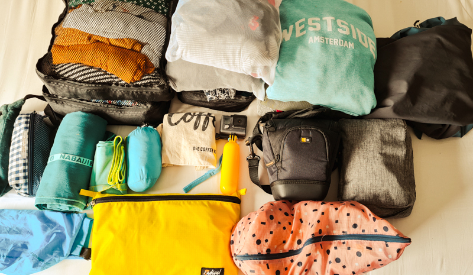
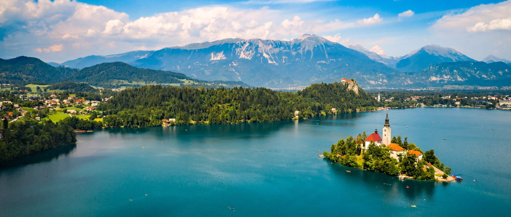
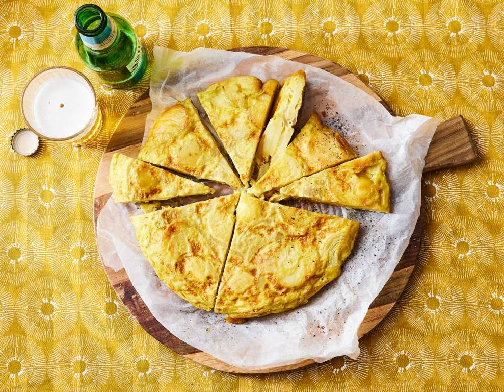

Tips
Paklijst
Wanneer je gaat reizen is het van belang om goed voor te bereiden en te bedenken wat je allemaal mee moet nemen. Hiervoor heb ik een paklijst samengesteld:
- Een goede backpack
- Een kleiner rugzakje of fannypack voor dagtripjes
- Een slotje om je spullen te beveiligen
- Kleding voor de verschillende weersomstandigheden
- Slippers om te gebruiken voor de douches in hostels
- Een klein opvouwbare microvezel handdoek
- Toiletspullen zoals tandenborstel, tandpasta, deo, shampoo, borstel, scheermesje
- Zonnebrandcreme
- Eventuele medicijnen
- Oplader en powerbank
Vergeet verder natuurlijk niet je reisdocumenten en een geldig identiteitsbewijs en kopiën hiervan mee te nemen. En eventueel iets van een camera of een boek als je dat leuk vind
Handige sites
Voor het aanschaffen van een interrailpas moet je natuurlijk op de site van interrail zijn: https://www.interrail.eu/nl/interrail-passes/global-pass.
Voor het zoeken en boeken van de beste hostels raad ik je aan om een kijkje op hostelworld.com of booking.com te nemen.
Mocht je specifiek naar Sevilla gaan raad ik zeker het Oasis Backpackers Hostel aan. Op oasissevilla.com kun je hier een kamer boeken. Ze hebben twee locaties en ik verbleef in de Palace variant.
In dit artikel van The Guardian kun je inspiratie opdoen voor verschillende routes door Europa.
Ook op railtripping.com staan een paar hele leuke routes voor beginners.
Makkelijk Spaans recept
Mocht je inspiratie nodig hebben voor recepten die je zelf kunt koken in hostels dan raad ik zeker dit recept voor een Spaanse tortilla aan. Het is makkelijk, snel en je hebt maar vijf ingrediënten nodig:
- 450g vastkokende aardappelen
- 2 middelgrote uien
- 6 witte scharreleieren
- 200ml olijfolie
- zout
Voer de volgende stappen uit:
- Schil de aardappelen en snijd in dunne plakjes. Snijd de uien in dunne halve ringen. Verhit de olie in een koekenpan op middelhoog vuur en bak hierin de aardappelen 15 min. Schep af en toe om, hou de aardappelen heel. Voeg na 8 min. de uien toe.
- Zeef de aardappelen en uien boven een kom en vang de olie op.
- Klop de eieren los in een ruime kom en breng op smaak met peper en het zout. Schep het aardappelmengsel erdoor en laat 10 min. rusten.
- Verhit 2 el opgevangen olie (per tortilla) in een koekenpan op middelhoog vuur en schenk het tortilla mengsel in de pan. Ga na 1 min. met een spatel langs de rand van de pan om de tortilla los te maken. Keer de tortilla na 4 min. om met behulp van een bord: schuif de tortilla uit de pan op een groot bord, met de ongebakken kant naar boven. Leg de pan ondersteboven op de tortilla en keer alles vlug om, nu ligt de ongebakken kant onderop. Duw de randjes nog een beetje aan met de spatel. Gaar nog 1 min.
- Schuif de tortilla op een bord en laat 5 min. rusten voor het aansnijden. Snijd in ca. 10 puntjes.
Dit recept is van de Allerhande. De meeste hostels hebben het benodigde keukengerij in hun keuken en vaak staan er ookal basisproducten zoals olijfolie en zout. Hierdoor is het vrij goedkoop en je kunt het zeker ook goed delen met hostelgenoten!